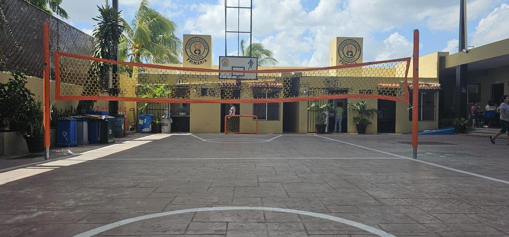
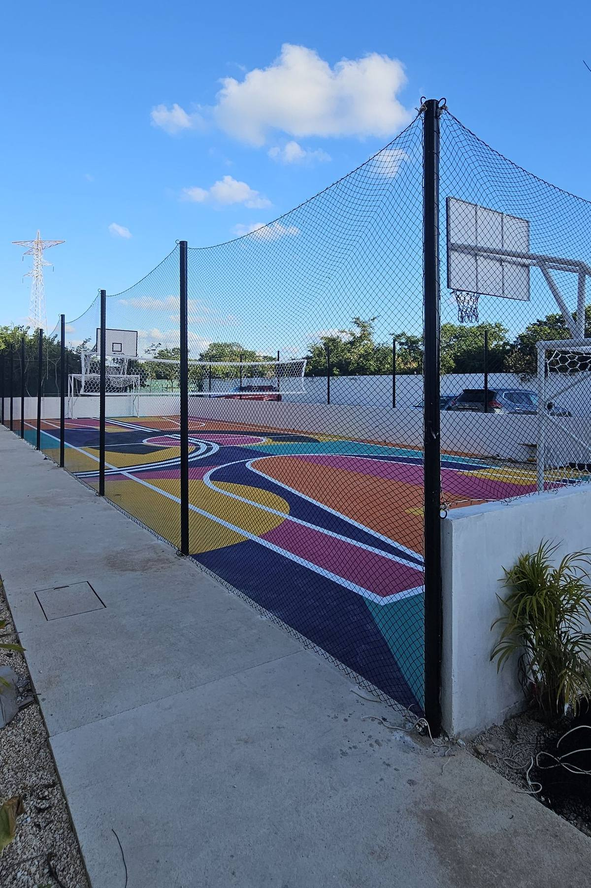
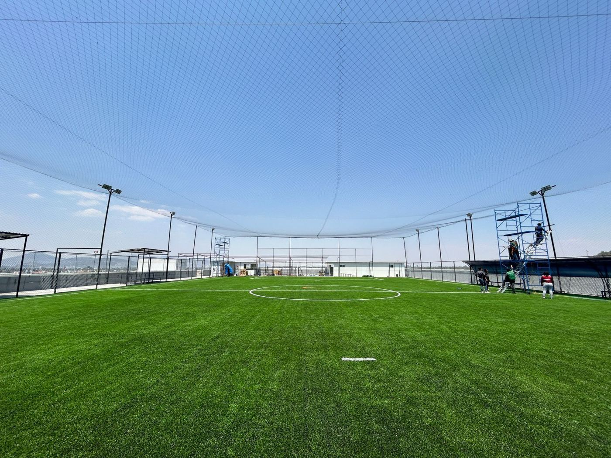

Una escuela tiene una sola cancha y varios grupos quieren usarla. En una mitad juegan fútbol; en la otra, el balón interrumpe la clase a cada rato. Muchas veces el problema no es la falta de espacio, sino que falta la red adecuada.
En una cancha de usos múltiples la red no se elige por el deporte “principal”, sino por cómo se usa el espacio: qué deportes, cuántos grupos al mismo tiempo y hacia dónde salen los balones. Aquí te explico cómo lo revisamos en Grupo RC.
Perimetral, divisoria o techo de red: tres funciones distintas
| Red | Para qué sirve |
|---|---|
| Perimetral | Evitar que los balones salgan de la cancha hacia calles, casas, estacionamientos u otras áreas. |
| Divisoria | Separar dos zonas de la misma cancha que se usan al mismo tiempo. |
| Techo de red | Detener los balones que salen por arriba, sobre todo en canchas rodeadas de casas o cristales. |
| Red de juego | Forma parte del deporte, como la red de voleibol o la de básquetbol. |
Son productos diferentes. Una divisoria no sustituye una red de voleibol, y una red de juego no sirve para cerrar el perímetro.

Empieza por el calendario, no por la red
Antes de cotizar, anota qué deportes se juegan, cuántos grupos usan la cancha y en qué horarios. Así sabrás si necesitas separar zonas todos los días o solo en ciertos entrenamientos.
Algunas actividades pueden convivir con una divisoria; otras necesitan la cancha completa. Un croquis sencillo con los horarios dice más que una foto de la red que te gustó.
La abertura se elige por el balón más pequeño
Si la red va a recibir balones de varios deportes, se elige por el más pequeño. Una abertura que detiene un balón de fútbol puede dejar pasar una pelota de tenis o de béisbol.
- Fútbol, voleibol y básquetbol: evaluamos redes de 3 o 4 pulgadas.
- Si también hay béisbol, sóftbol o tenis: hace falta una abertura más cerrada y revisar la fuerza de los impactos; no se traslada sin más la solución de fútbol.
Lo explico con medidas y ejemplos en redes de 1, 2, 3 y 4 pulgadas.

Nuestras redes perimetrales son de nylon alquitranado calibre 18, de color negro y con un contorno de piola blanca en los cuatro lados, fabricadas a la medida.
Una divisoria es la misma red, instalada de otra forma
Una red divisoria es la misma red que usamos en perímetros; lo que la hace divisoria es cómo se instala. En Grupo RC fabricamos la red a la medida y nuestras instalaciones son de redes fijas.
Si tu cancha a veces se usa completa (torneos, eventos, educación física), la forma de colgarla y quitarla la resuelve quien la instala, según los postes, el cable o la estructura del techo de tu cancha.
Altura: mira por dónde se escapan los balones
La altura se define por las trayectorias que hay en la cancha. Una red baja separa a la vista, pero deja pasar los disparos elevados. No hay una altura única para todas las canchas multiusos.
Si hay casas, vidrios o autos cerca y los balones salen por arriba, la solución suele ser un techo de red, no subir la perimetral indefinidamente.

Deja espacio para que la red trabaje
Al recibir un balonazo la red se mueve. Deja distancia entre la red y las personas, bancas u obstáculos. No pongas una actividad sensible pegada a la red pensando que el balón se va a detener sin empujarla.
Cierre inferior
Revisa el encuentro de la red con el piso: un hueco deja pasar balones rodando y un exceso de red tirado en el suelo puede hacer tropezar a alguien. La red tampoco debe bloquear salidas de emergencia.
No improvises los puntos de sujeción
Define desde el inicio dónde se sujetará la red. No uses aros de básquetbol, tableros ni porterías como anclajes. Si se va a fijar al techo o a una estructura existente, que un responsable técnico confirme que la aguanta: el peso de la red y los balonazos cuentan, y al aire libre también el viento.
Qué mandarnos para cotizar
- Croquis con largo y ancho de la cancha y la línea donde quieres dividir.
- Altura disponible y altura que quieres cubrir.
- Fotos de postes, estructura o techo donde se sujetaría la red.
- Deportes que se juegan, horarios y edades.
Con eso te decimos qué combinación de perimetral, divisoria o techo conviene y te cotizamos la red a la medida.
Un ejemplo para decidir
Una escuela alterna entrenamientos de fútbol y básquetbol, y en eventos usa la cancha completa: conviene una divisoria que el personal de la escuela pueda quitar y poner. Si las dos actividades coinciden todos los días, primero hay que revisar si el espacio alcanza; a veces la mejor solución es ajustar horarios.
La meta no es poner más red, sino organizar mejor la cancha. Una buena propuesta piensa desde el inicio en el montaje y el mantenimiento.
Las recomendaciones de este artículo corresponden al criterio de Reinier Coral, de Redes Deportivas RC.